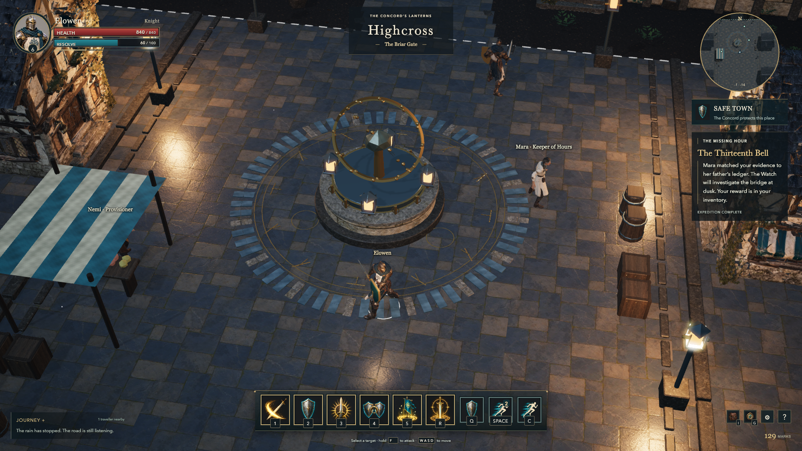
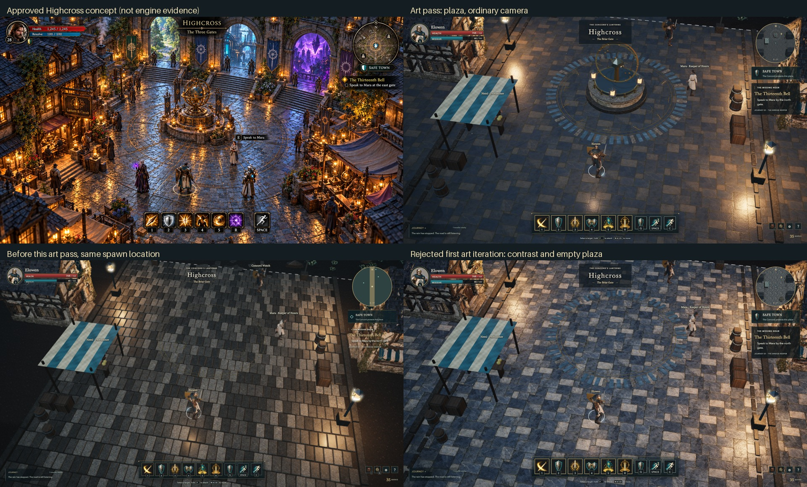
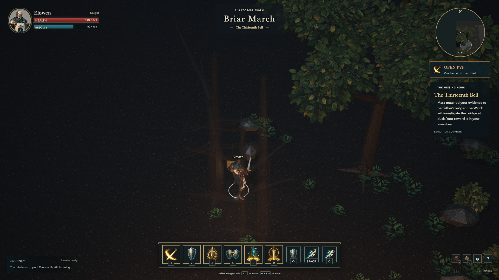
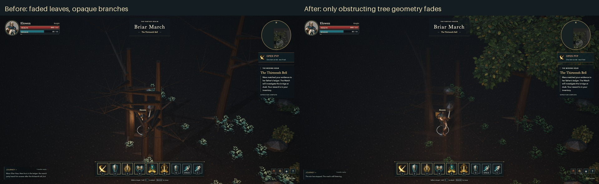
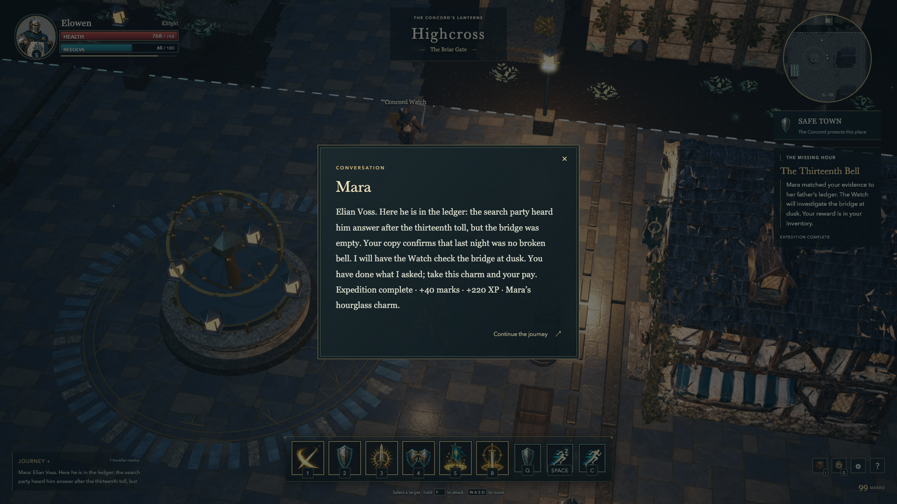

A centre for Highcross.
A central landmark, new stone and foliage, a map of the actual terrain, and a cleaner view of the Knight.
Art pass playable · full visual acceptance openThis pass stays on the first expedition. Highcross now has its astrolabe in the plaza, between Mara and the market, where it can serve as a landmark. Its new plinth, brass rings and nearby lights give the approach a focal point. The server collision and developer routes were changed with the geometry, and tests verify that the paths around it remain open.


Three Higgsfield images supply worn courtyard paving, aged limestone and a transparent leaf cluster. The original images and prompts are retained. Blender turns them into reusable materials and foliage, with local colour grading and approximate normal and roughness maps. The gate gains layered masonry, pilasters, folded banners and ivy; the clue now sits beside a physical memorial arch. No Meshy task was submitted for this pass.
The first browser comparison rejected the paving contrast and the still-empty centre. The final paving grade is quieter, and the astrolabe moved into view. It is a clear improvement over the previous floor, but the combined comparison also makes the remaining gap obvious: the approved concept has much richer shopfronts, props, planting and architecture. This milestone does not certify that target as met.


The HUD keeps the agreed layout and generated portrait/action art. Vitals and abilities are larger, the journey log collapses, and the selected target takes priority over the location title. A top-down Blender survey of the actual world replaces the schematic minimap. Live actors, the current objective and exact safe boundaries are drawn over it. The map is a navigation aid; the main viewport remains real-time 3D.
The developer expedition went from Mara through hound fights and across the bridge to Elian Voss’s inscription, then back for the charm, forty marks and experience. The recording below is 75.04 uncut seconds of browser play with actual game audio and the HUD sampled at two frames per second. Reward collection was verified afterward. These commands use the ordinary server protocol, but it remains a guided developer rehearsal, not an independent test of fun.
Walking away from the road caught a problem the main route had missed: leaves faded while trunks and branches still hid the Knight. Each tree now has its own geometry group. Only parts between the camera and the player fade, preserving the surrounding canopy. The fern colours were also too pale and were darkened. The final export triangulates the authored surfaces before generating tangents, removing the environment’s normal-map portability warnings. The footage predates these last corrections; final stills carry the later build identity.




The smaller 1280 by 720 viewport retained the main HUD controls, and the inventory showed Mara’s reward. All 38 automated gameplay and transport checks pass. The environment validates with zero GLB errors or warnings; the other five models retain six warnings in total. The new ten-minute trace kept a fixed 1920 by 1080 viewport with no hidden samples: median 83.73fps, p95 17.40ms and p99 21.30ms on the M5. It meets the numerical targets for this synthetic rendering fixture. The longest stall was 511.20ms; its cause remains unestablished. This is not a lower-end hardware or full network battle qualification.


The next acceptance step is a person playing for ten minutes without the route tools or developer directions. Can they understand the bell, find the memorial, read an enemy attack and want to keep playing? A short observation brief is saved with the project. Further architecture and prop refinement, the earlier heap-budget miss and lower-end hardware qualification remain open before bulk production. All twelve guilds and the agreed open-world PvP rules remain required.